화공기사(구)(구) (2001-09-23 기출문제)
1과목: 화공열역학
1. 다음 중 시량변수(extensive property)는 어느 것인가?
- 엔탈피
- 압력
- 온도
- 비용
(정답률: 알수없음)

2. 탄화수소 공업분야에서 흔히 사용되는 어떤성분의 평형비 (Ki는
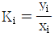
로 정의된다. 이상용액이라 생각할 때 Ki를 어떻게 표시하는가?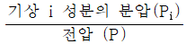
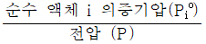
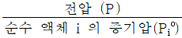
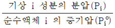
(정답률: 알수없음)
3. 다음 중 맥스웰(Maxwell)의 관계식으로 적당하지 않은 것은?
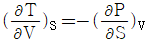
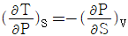
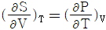
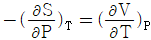
(정답률: 알수없음)
4. 일정온도 및 압력하에서 반응좌표(reaction coordinate)에 따른 Gibbs 에너지의 관계도에서 화학반응 평형점은?
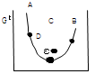
- A
- B
- C
- D
(정답률: 알수없음)
5. 반데르 바알스 방정식,
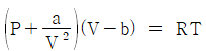
에서 P는 atm단위 V는 L/mole단위로 취하면, 상수 a의 단위는?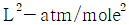
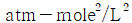
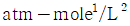
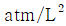
(정답률: 알수없음)
6. 고립계의 총 엔트로피의 증가와 관련이 없는 것은?
- 넓은 의미로서 안정도와 확율이 증가되는 것
- 좁은 의미로서 볼 때 더욱 무질서해진다는 것
- 열이 일로 전환할 때 이부가 열의 형태로 고립계에 축적된다는 것
- 열이 일로 가역적으로 전환 된다는 뜻
(정답률: 알수없음)
7. 다음 그림은 1기압하에서의 A, B 2성분계 용액에 대한 비점선도(Boiling point diagram)이다. XA=0.40인 용액을 1기압하에서 서서히 가열할 때 일어나는 현상을 설명한 다음 사항 중 틀린 것은? (단, 처음온도는 40℃이고, 마지막 온도는 70℃이다.)
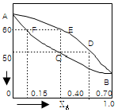
- 용액은 50℃에서 끓기 시작하여 60℃가 되는 순간 완전히 기화한다.
- 용액이 끓기 시작하자마자 생긴 최초의 증기조성은 YA=0.70이다.
- 용액이 계속 증발함에 따라 남아있는 용액의 조성은 곡선 DE를 따라 변한다.
- 마지막 남은 한방울의 조성은 XA=0.15이다.
(정답률: 알수없음)
8. 우리 주변에서 일어나는 과정은 다음 중 어느 것에 가장 가까운가?
- isothermal process
- adiabatic process
- polytropic process
- isoentropy process
(정답률: 알수없음)
9. 어떤 냉동장치에서 냉동제의 순환과정이 다음 그림과 같을 경우 1냉동톤당 냉동제의 순환속도는? (단, HA= 53㎉/㎏, HB= 49㎉/㎏, HC=HD= 16㎉/㎏)
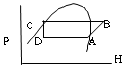
- 81.7㎏/hr
- 73.181.7㎏/hr
- 50.481.7㎏/hr
- 41.381.7㎏/hr
(정답률: 알수없음)
10. 아래의 P-T선도에서 이상기체의 단열 압축과정을 나타내는 선은?
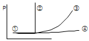
- 선 ①
- 선 ②
- 선 ③
- 선 ④
(정답률: 알수없음)
11. 열역학적 시스템은 주위와 열, 일 그리고 물질의 교환을 통하여 상호작용하고 있다. 다음 중 열과 물질의 교환이 일어나지 않는 시스템을 자칭하는 것으로 가장 적당한 것은?
- adiabatic
- closed
- isolated
- isothermal
(정답률: 알수없음)
12. 평형(equilibrium)의 정의중 틀린 것은?
- △GT.P=0
- 변화가 일어날 확률이 압도적으로 큰 상태
- 정반응의 속도와 부반응의 속도가 같을 때
- △Vmix=0
(정답률: 알수없음)
13. 공기를 이상기체로 생각할 때, 기체상수 R값을 ㎏f m/㎏mㆍK로 표시하면, 가장 가까운 값은? (단, 표준상태에서 공기의 밀도는 1.29㎏/m3이다.)
- 8.314
- 1.987
- 62.4
- 29.3
(정답률: 알수없음)
14. 그림은 air-standerd Otto cycle의 P-V선도이다. 틀린 것은?
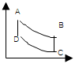
- AB경로는 단열과정이다.
- BC경로는 정용과정이다.
- CD경로는 등온과정이다.
- DA경로는 정용과정이다.
(정답률: 알수없음)
15. α상과 β상이 서로 평형상태에 있다. 다음 조건 중 틀린 것은? (단, G : Gibbs free energy, μ : chemical potential, f : fugacity, S : entropy)
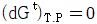
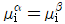
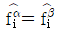
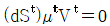
(정답률: 알수없음)
16. C(s)+O2(g)→CO2(g) : △H1 = -94⑤0kca/kmolㆍCO2, CO(g)+1/202(g)→CO2(g) : △H2 = -67640kcal/kmolㆍCO2 위와 같은 반응을 알고 있을 때 다음 반응열은 얼마인가?
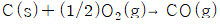
- -37025 ㎉/k㏖ㆍCO2
- -26410 ㎉/k㏖ㆍCO2
- -74⑤0 ㎉/k㏖ㆍCO2
- +26410 ㎉/k㏖ㆍCO2
(정답률: 알수없음)
17. 압축 또는 팽창에 관해 옳게 설명된 것은?
- 압축기의 효율은
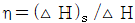
로 나타낸다. - 노즐에서 에너지 수지식은
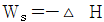
이다. - 터빈에서 에너지 수지식은
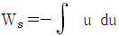
이다. - 조름공정에서 에너지 수지식은 dH = -u du 이다.
(정답률: 알수없음)
18. 다음 중 에너지의 출입은 가능하나 물질의 출입은 불가능한 계는?(오류 신고가 접수된 문제입니다. 반드시 정답과 해설을 확인하시기 바랍니다.)
- open system
- closed system
- isolated system
- reversible system
(정답률: 알수없음)
19. 25℃에서 기체혼합물이 100m3의 용기속에 9 bar의 계기압력으로 담겨져 있다. N2와 H2의 분압이 각각 60 kPa과 140kPa이라 할 때, 기체혼합물중 H2기체의 부피는 25℃에서 몇 m3가 용기속에 차지하고 있는 셈인가? (단, 기체혼합물은 이상기체로 간주하며 대기압력은 1bar 이다.)
- 14m3
- 15.6m3
- 16m3
- 17.7m3
(정답률: 알수없음)
20. 다음 기본 관계식에서 틀린 것은?
- dE = SdT - PdV
- dH = TdS + VdP
- dA = -SdT - PdV
- dF = -SdT + VdP
(정답률: 알수없음)
2과목: 화학공업양론
21. 산의 질량분율이 XA인 수용액 L ㎏과 XB인 수용액 N ㎏을 혼합하여 XM인 산 수용액을 얻으려고 한다. L과 N의 비를 구한 것은?
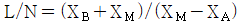
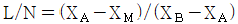
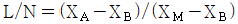
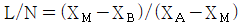
(정답률: 알수없음)
22. 어떤 반응탑에 18℃, 700㎜Hg, 관계습도 50%의 공기를 도입하였다. 몰습도는?
- 0.001 ㎏ㆍmole(㎏ㆍ.mole건조공기-1)
- 0.011 ㎏ㆍmole(㎏ㆍ.mole건조공기-1)
- 0.022 ㎏ㆍmole(㎏ㆍ.mole건조공기-1)
- 0.033 ㎏ㆍmole(㎏ㆍ.mole건조공기-1)
(정답률: 알수없음)
23. Na2SO4를 포함하는 수용액의 조성을 mole백분율로 표시하면? (단, Na2SO4의 분자량은 142)
- 5.2mole%
- 21.8mole%
- 26.4mole%
- 30mole%
(정답률: 알수없음)
24. 다음과 같은 연도가스(Flue gas)의 평균 분자량은 약 얼마인가?
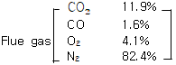
- 18.25
- 28.84
- 30.07
- 35.⑤
(정답률: 알수없음)
25. 이상기체 1몰의 정압열용량이
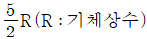
이다. 정용열용량은?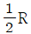
- R
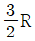
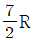
(정답률: 알수없음)
26. 다음 중 시강특성에 해당되지 않는 것은?
- 온도
- 압력
- 부피
- 밀도
(정답률: 알수없음)
27. 질량분율 Xf의 유입량 F가 계로 유입되어 질량분율 Xℓ의 배출량 L과 질량분량 XV의 배출량 V가 계를 떠날 때 직각 삼각형에서 표시될 수 있는 지렛대의 원리에 적합치 않은 것은?
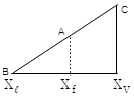
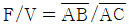
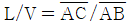
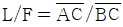
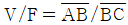
(정답률: 알수없음)
28. 건조공기와 수증기의 열용량은 각각 1.0J/gㆍK 및 1.92 J/gㆍK이다. 습도가 13(g H2O/kg건조공기)인 습한 공기의 열용량 (습윤열용량)은 얼마인가?
- 1.025kJ/㎏ㆍK
- 0.345㎉/㎏ㆍK
- 0.125kJ/㎏ㆍK
- 0.125㎉/㎏ㆍK
(정답률: 알수없음)
29. 원하는 생성물의 양이 결정되는데 기인하는 선택도의 정의는?
- 원하는 생성물의 몰수 / 원하지 않는 생성물의 몰수
- 원하는 생성물의 몰수 / 원하지 않는 반응물의 몰수
- 원하지 않는 생성물의 몰수 / 원하는 생성물의 몰수
- 원하지 않는 생성물의 몰수 / 원하는 반응물의 몰수
(정답률: 알수없음)
30. acetone 14.8 vol%를 포함하는 아세톤, 질소의 혼합물이 있다. 20℃, 745mmHg에서 비교 포화도는 얼마인가?
- 17%
- 28%
- 53%
- 60%
(정답률: 알수없음)
31. Turbine을 운전하기 위해 증기량 2㎏/S로 5atm, 300℃에서 50m/s로 들어가고 300m/s 속도로 대기에 방출된다. 이 과정에서 turbine은 400㎾의 축일을 하고 100KJ/s 열을 방출하였다면, 엔탈피 변화는 얼마인가? (단, work : 외부에 일할시 +, heat : 방출시 - )
- 212.5㎾
- -387.5㎾
- 412.5㎾
- -587.5㎾
(정답률: 알수없음)
32. 실제기체에 대한 상태방정식으로 이용되고 있는 반데르발스 방정식(Van der Waal's equation)에서 상수 a와 b의 차원으로 모두 올바른 것은?
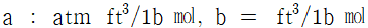
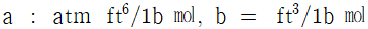
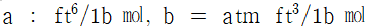
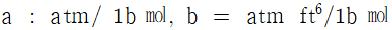
(정답률: 알수없음)
33. 20℃, 1㏖의 이상기체가 1atm에서 5atm으로 정온가역적으로 압촉되었다. 이때 계가 한 일은?
- 837㎈/㏖
- -937㎈/㏖
- -1037㎈/㏖
- 1137㎈/㏖
(정답률: 알수없음)
34. 대응상태의 원리에 대한 설명 중 틀린 것은?
- 대응상태의 원리는 환산입력, 환산온도, 및 환산체적에 의해 설명된다.
- 대응상태의 원리는 실제기체의 거동이 이상기체의 거동에서부터 벗어나는 정도를 추산하는데 사용된다.
- 동일 환산압력, 동일 환산온도 및 동일 환산체적하에 있는 두 물질은 물질의 종류에 따라 특정한 거동을 나타낸다.
- 임계점에서의 임계압축인자는 모든 물질에 대하여 일정값을 갖는다.
(정답률: 알수없음)
35. 에틸 알코올의 증발잠열은 표준비점 78℃에서 204㎈/g이었고, 임계온도는 243℃이다. 180℃에서의 증발열은?
- 141.5㎈/g
- 294.2㎈/g
- 54.0㎈/g
- 771.0㎈/g
(정답률: 알수없음)
36. 다음 중 SI 단위계로만 구성된 것은?
- ㎝, dyne, erg
- ft, Kmol/m3, m2/s, ㎈
- lbm, Btu, Ω, μm2
- ㎏, N, ℃, sec
(정답률: 알수없음)
37. 1,000㎏/hr의 유속으로 벤젠과 톨루엔의 혼합용액이 유입하여(각각 50%식)벤젠은 상층에서 450㎏/hr, 톨루엔은 하층에서 475㎏/hr로 분리되고 있다. 상층에 섞여있는 톨루엔 (q1, ㎏/hr)과 하층에 섞여있는 벤젠(q2, ㎏/hr)은 각각 얼마식인가?
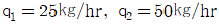
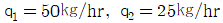
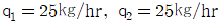
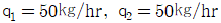
(정답률: 알수없음)
38. 보일러에 Na2SO3(분자량126)를 가하여 공급수 중의 산소를 제거한다. 보일러 공급수 200톤에 산소함량 9ppm일 때 이 산소를 제거하는데 필요한 Na2SO3의 이론양은? (단, 반응식은 Na2SO3+O2→2Na2SO4임)
- 708㎏
- 448㎏
- 142㎏
- 71㎏
(정답률: 알수없음)
39. 10poise를 16/ft sec로 환산하면 얼마 이겠는가?
- 0.572
- 0.672
- 0.772
- 0.872
(정답률: 알수없음)
40. 반경이 r이고 각도가 θ인 회전력(τ)이 회전축을 통해 전달되는 에너지 전달속도의 표현식은? (단, ω는 각속도이다.)
- τω
- (τω) /2
- (τω)2
- (τω)2/4
(정답률: 알수없음)
3과목: 단위조작
41. 기체 흡수시 흡수 속도를 크게 하기 위한 조건이 아닌 것은?
- 접촉시간을 크게한다.
- 흡수계수를 크게한다.
- 농도와 분압차를 적게한다.
- 기-액 접촉면을 크게한다.
(정답률: 알수없음)
42. 캐비테이션(Cavitation)현상을 잘못 설명한 것은?
- 공동화(空同化)현상을 뜻한다.
- 펌프내의 증기압이 낮아져서 액이 일부가 증기화하여 펌프내에 응축하는 현상
- 펌프의 성능이 나빠진다.
- 임펠러 흡입부의 압력이 유체의 증기압 보다 높아져 증기는 임펠러의 고압부로 이동하여 갑자기 응축한다.
(정답률: 알수없음)
43. 지름이 8ft인 pipe 안으로 비중이 2인 기름을 30ℓ/min의 유속으로 수송하면 pipe 안에서 기름의 평균속도는?
- 0.29ft/min
- 0.59ft/min
- 4.78×10-3ft/min
- 9.57×10-3ft/min
(정답률: 알수없음)
44. 증류탑의 단효울이 50%, 이론 단수가 15일 때 설계하여야 할 단수는 얼마인가?
- 20
- 25
- 32
- 40
(정답률: 알수없음)
45. 유체가 1m의 직경을 가진 원관에 물이 1/2만 채워져 흐르고 있다. 이 때 상당 직경(equivalent diameter)은 얼마가 되는가?
- 1/2m
- 1/4m
- 1m
- 2m
(정답률: 알수없음)
46. 관 직경을 D, 유체의 밀도를 ρ, 정압비열은 Cp, 점도를 μ, 질량속도를 G, 열전도도를 K, 열전달계수를 h라 할 때 무차원이 되지 않는 것은?
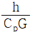
(정답률: 알수없음)
47. 관내 흐름이 난류인 경우 압력손실에 관한 설명 중 틀린 것은?
- 관의 길이에 비례한다.
- 속도의 제곱에 거의 비례한다.
- 관의 지경 크기에 거의 반비례한다.
- 유체의 밀도와 점도에 무관하다.
(정답률: 알수없음)
48. 다음 액체 교반기 중 고점도의 액체를 혼합하는데 가장 적합한 교반기는?
- 공기 교반기 (air agitator)
- 패들 (paddle) 교반기
- 프로펠러 (propeller)교반기
- 터빈 (turbine) 교반기
(정답률: 알수없음)
49. 다음 중 입상(粒狀)재료에 적당한 건조기가 아닌 것은?
- 탑 건조기
- 콘베이어 건조기
- 회전 건조기
- 드럼 건조기
(정답률: 알수없음)
50. 증류에서 환류가 없는 상태로 조업 한다면, 다음 중 어느 경우가 되겠는가?
- 이론단수가 최소
- 이론단수가 최대
- 탑상제품의 순도가 향상
- 탑저제품이 없음
(정답률: 알수없음)
51. 메탄올 40㏖e%, 물 60㏖e%의 혼합액을 정류하여 메탄올 95 ㏖e%의 유출액과 5㏖e%의 관출액으로 분리한다. 유출액 100[㎏-㏖e/hr]을 얻기 위해서는 공급액의 양을 얼마로 하면 되는가?
- 257[㎏-㏖e/hr]
- 190[㎏-㏖e/hr]
- 226[㎏-㏖e/hr]
- 175[㎏-㏖e/hr]
(정답률: 알수없음)
52. 증류나 흡수조작 있어서 충전층(packed)탑이 다단층(plate)탑에 비하여 유리한 조건은?
- 압력 손실이 작다.
- 조작 효율이 좋다.
- 액상 hold up이 크다.
- 기-액 접촉의 제어가 쉽다.
(정답률: 알수없음)
53. 증기가 응축기에서 응축한다. 여기에 비응축가스가 들어있다면 없을때보다 응축속도에 어떤 영향이 오겠는가?
- 감소 한다.
- 증가 한다.
- 영향이 없다.
- 예측 불가능 하다.
(정답률: 알수없음)
54. 액체 비등에서의 열전달은 증류와 증발에서 대단히 중요하다. 비등의 기구(mechanism)는 자연대류, 핵비등, 전이비등, 막비등으로 구분하고 있다. 액체를 비등하여 증발시킬 때 어떤 기구에서 비등시키면 효율적인가?
- 자연대류
- 핵비등
- 전이비등
- 막비등
(정답률: 알수없음)
55. 비증 0.9, 점도 1.0poise의 원유를 직경 30.5㎝의 배관을 통하여 10m3/hr로 수송한다. 이때 레이놀드 상수는?
- 104.4
- 232.2
- 1160.0
- 2320.5
(정답률: 알수없음)
56. 다음 그림은 추출장치를 보여주고 있다. 이런 형태의 추출장치를 무엇이라고 하는가?
- 맥동 추출탑
- 향류 추출탑
- 충전 추출탑
- 분무 추출
(정답률: 알수없음)
57. 250℃의 연료가스 400㎏/hr에 의하여 100㎏/hr의 물을 열교환기에서 20℃에서 70℃까지 가열한다. 연료가스의 비여을 0.25라고 할 때 열교환기를 나오는 연료가스의 온도는 얼마나 되는가?
- 80℃
- 130℃
- 150℃
- 200℃
(정답률: 알수없음)
58. 다음 중 일이 가장 적게드는 압축(Compression)은?
- 등온압축(isothermal compression)
- 단열압축(Adiabatic compression)
- 폴리트로픽 압축(Polytropic compression)
- 아이센트로픽 압축(isentropic compression)
(정답률: 알수없음)
59. 증발조직을 향상시키는 조치 중 틀린 것은?
- 피막억제
- 비말억제
- 열원위치조정
- 비점상승억제
(정답률: 알수없음)
60. 무한대의 면적을 가진 두 개의 흑체(Black body)가 서로 마주하고 있다. 두 흑체의 온도가 각각 327℃ 및 127℃라고 하면 복사에 의해서 전달되는 열량은 흑체 1m2당 얼마나 되는가?
- 1245 ㎉/hr
- 2458 ㎉/hr
- 4708 ㎉/hr
- 5075 ㎉/hr
(정답률: 알수없음)
4과목: 반응공학
61. XA=-RCA인 속도식으로 표시되고 부피가 일정하게 진행되는 반응을 어떤 온도에서 완전 혼합호출 반응기(mixed flow reactor) 1개를 사용하여 행한 결과, 반응 기내 평균 체류시간이 30분 일 때 성분 A의 전환율 XA=0.60을 얻었다. 만약 동일한 크기의 반응기를 1개 더 직렬로 연결하여 반응시키면 XA의 값은 얼마인가?
- 0.80
- 0.84
- 0.88
- 0.92
(정답률: 알수없음)
62. 다음 그림은 어떤 반응기를 사용하였을 때의 체류시간에 상당하겠는가?
- plug flow reactor
- mixed flow reactor
- batch reactor
- semibatch reactor
(정답률: 알수없음)
63. 순수한 기체 A(CAO=0.44mol/ℓ)가 다음과 같이 중합 반응을 일으켜 95%의 전화율을 얻는데 필요한 플러그 반응기의 체적은 몇 ℓ인가? (단, 3A → R, 반응속도 -XA=0.⑤4 ㏖/ℓ.min) 문제 오류(정답지 오류)로 정답이 없습니다. 여기서는 1번을 누르면 정답 처리됩니다. 정확한 정답을 아시는분께서는 오류신고를 통하여 정답 작성 부탁 드립니다.)
- 8.1ℓ
- 9.0ℓ
- 9.5ℓ
- 10ℓ
(정답률: 알수없음)
64. 화학 반응의 평형상수 K에 관한 설명으로 틀린 것은?
- 평형상수 K는 온도의 함수이다.
- 평형상수 K는 압력의 영향을 받지 않는다.
- 가역반응의 평형상수 K는 0보다 작다.
- 비가역 반응의 평형상수 K는 ＞ 1 이다.
(정답률: 알수없음)
65. 다음과 같은 반응에서 R1=R2=1 sec-1이다. p의 농도 Cp가 최대로 되는 시간은 얼마인가? 문제 오류(정답지 오류)로 정답이 없습니다. 여기서는 1번을 누르면 정답 처리됩니다. 정확한 정답을 아시는분께서는 오류신고를 통하여 정답 작성 부탁 드립니다.)
- 1초
- 2초
- 3초
- 4초
(정답률: 알수없음)
66. 새로운 반응의 촉매를 개발코자 한다. 가장 필요치 않은 설계인자는?
- 반응의 평형정수
- 화학 양론식과 열물성
- 촉매와 담체의 선정
- 담체의 형상
(정답률: 알수없음)
67. 액상 반응에서 공간시간(space time) τ와 평균체재 시간 (holding time) 의 관계가 맞는 것은? (단, 이상혼합반응기 : τm, , 이상관형반응기 : τp, )
(정답률: 알수없음)
68. 다음 가역반응의 평형상수를 결정하는 방법이 아닌 것은?
- 반응기의 온도 측정
- 열 역학적 방법
- 통계 역학적 방법
- 정반응 및 역반응 속도와 계산
(정답률: 알수없음)
69. 다음 2차 반응의 반감기에 대한 뜻으로 옳은 것은?
- 속도 정수에 비례한다.
- 초기 농도의 제곱에 반비례 한다.
- 초기 농도에 반비례 한다.
- 초기 농도에 비례 한다.
(정답률: 알수없음)
70. 단일 이상 (理想)반응기가 아닌 것은?
- 회분식 반응기
- 플러그 흐름 반응기
- 다중 효능 반응기
- 혼합 흐름 반응기
(정답률: 알수없음)
71. 충돌 이론에 의하면 반응속도 상수에 영향을 미치지 않은 것은?
- 이온화 포텐셜
- 전자 친화도
- 정전기 에너지
- 전기 전도도
(정답률: 알수없음)
72. 반응계의 체적이 반응이 진행함에 따라 변하는 반응에서 반응물 농도 (CA)와 전화율 (XA)의 관계는? (단, 는 체적의 변화분율, CAO는 반응물 초기농도이다.)
(정답률: 알수없음)
73. 다음 그림이 뜻하는 반응은 어느 것인가?
- Auto catalytic reaction
- Heterogeneous reaction
- 그림만 보고 알수 없다.
(정답률: 알수없음)
74. A→R 비가역 1차 액상반응의 반응전화율 관계가 맞는 것은?
- 반응기 크기의 함수이다.
- 반응기 내의 압력에 비례한다.
- 반응 초기농도에 비례한다.
- 반응 시간의 함수이다.
(정답률: 알수없음)
75. Ak2Rk2S이 반응에서 R의 농도가 최대가 되는 점은? (단, K1=K2)
- CA ＞ CR
- CR = CS
- CA = CS
- CA = CR
(정답률: 알수없음)
76. 회분 반응기 내에서 진행되는 화학반응이 반응속도식과 반응기구를 규명하기 위하여서는 시간에 따른 농도의 변화를 측정하여 그 실험치들을 미분법과 적분법에 따라 해석하여야 한다. 이중 미분법에 따른 해석절차가 아닌 것은?
- 반응 속도식을 가정하고, 농도-시간 곡선을 그린다.
- 임의의 시간에서의 곡선의 기울기(dC/dt)를 구한다.
- 가정한 속도식을 적적한 적분공식을 적용하여 선형의 방정식을 만든다.
- 얻어진 기울기들과 가정한 속도식에 대입한 이론치와의 상관관계가 선형인 살핀다.
(정답률: 알수없음)
77. 반응 물질의 농도를 낮추는 방법은? 복원중 (정확한 정답을 아시는분께서는 오류 신고를 통하여 내용 작성부탁 드립니다. 여기서는 1번을 누르면 정답 처리 됩니다.)
- 관형반응기(tubular reactor)를 사용한다.
- 혼합 흐름반응기(mixed flow reactor)를 사용한다.
- 회분식반응기(batch reactor)를 사용한다.
- 순환반응기(recycle reactor)에서 순환비를 낮춘다.
(정답률: 알수없음)
78. 다음 각항 옳은 것은?
- 자동촉매 반응을 제외한 모든 비가역 반응은 프러그 흐름 반응기가 혼합 반응기보다 좋다.
- 수많은 프러그흐름 반응기 직렬로 연결한 반응방식은 혼합 반응기와 같다.
- 수많은 프러그흐름 반응기를 직렬로 연결한 반응방식은 혼합 반응기와 같다.
- 혼합 반응기를 직렬로 연결한 때는 언제나 작은것부터 차례로 배열함이 좋다.
(정답률: 알수없음)
79. A→R인 0차 반응(-γA=1.0mol/ℓㆍmin)이 용적 10ℓ인 혼합 반응기에서 반응되어 A의 90%가 R로 되었다면 공급 속도는 얼마인가?
- 8.4㏖/ℓ
- 11.1㏖/ℓ
- 14.7㏖/ℓ
- 24.3㏖/ℓ
(정답률: 알수없음)
80. 다음 각 그림의 빗금친 부분의 넓이 가운데 플러그 반응기의 공간시간 τp를 나타내는 것은? (단, 밀도변화가 없는 반응이다. )
(정답률: 알수없음)
5과목: 공정제어
81. 그림과 같은 닫힌루프계에서의 입력R에 대한 출력 Y의 전달함수는?
(정답률: 알수없음)
82. 인 특성방정식에서 이득여유(Gain margine)가 -20dB일 때 K값은?
- 20
- -20
- 10
- -10
(정답률: 알수없음)
83. 대표적인 제어계의 Block Diagram을 그림에 표시하였다. H는 무엇의 전달함수인가?
- 제어기
- 측정요소
- 공정
- 최종제어요소
(정답률: 알수없음)
84. 50℃에서 150℃범위의 온도를 측정하여 4mA에서 250mA의 신호로 변환해 주는 변환기(transducer)에서의영점(zero)과 변화폭(span)은 얼마인가?
- 영점 = 0℃, 변화폭 = 100℃
- 영점 = 100℃, 변화폭 = 150℃
- 영점 = 50℃, 변화폭 = 150℃
- 영점 = 50℃, 변화폭 = 100℃
(정답률: 알수없음)
85. X(S)=1/[S(S2+2S+3)]일 때 의 값은?
- 0
- 1/3
- 1
- 3
(정답률: 알수없음)
86. Open loop전달함수 에 대한 근궤적 선도(root-locus diagram)를 작도할 대 두 개의 근궤적이 실수축을 이탈하는 점 (breakaway point)은?
- s = -2
(정답률: 알수없음)
87. 그림은 무엇을 나타내는가? (단, ℓ는 이동거리 (m), V 는 이동속도(m/sec)이다.)
- CR회로의 동작응답
- 용수철의 응답
- 데드타임(dead time)의
- 적분제어계의 응답
(정답률: 알수없음)
88. 다음의 Laplace 변형의 특성 중 틀린 것은?
(정답률: 알수없음)
89. 다음 블록선도에서 전달함수 는? 문제 오류(정답지 오류)로 정답이 없습니다. 여기서는 1번을 누르면 정답 처리됩니다. 정확한 정답을 아시는분께서는 오류신고를 통하여 정답 작성 부탁 드립니다.)
(정답률: 알수없음)
90. 함수 e-bt의 라플라스 함수는?
- e-bs
- s+b
(정답률: 알수없음)
91. 2차계의 주파수 응답에서 최대 진폭비는?
- 제동계수가 √2 /2보다 작으면 1이다.
- 제동계수가 √2 /2보다 크면 1이다.
- 제동계수가 √2 /2보다 작으면 1/2t이다.
- 제동계수가 √2 /2보다 크면 1/2τ이다.
(정답률: 알수없음)
92. 폐회로제어계(Closed-Loop Control System)를 설명한 것은?
- 부정확하고 신뢰성을 적으나 설치비가 저렴
- 순차제어(Sequence Control)라고도 하며, 기기에 의한 희망조건의 유지 및 변화제어
- 출력신호가 귀환요소를 통하여 입력측으로 귀환된 후 르 오차를 검출하여 제어하는 계
- 되먹임제어(Feedback Control)라고도 하며 제어계의 출력과 입력이 서로 독립적인 제어계
(정답률: 알수없음)
93. 어떤 2차계의 전달함수 이다. 이 계에 unit step change가 주어질 때 over shoot를 구하면?
- 0.1
- 0.2
- 0.3
- 0.4
(정답률: 알수없음)
94. 2차계에 단위 계단입력이 가해져서 자연진동을 한다면, 이 계의 특징은?
- 감쇄계수값이 0이다.
- 감쇄계수값이 1이다.
- 시간상수값이 1이다.
- 2차계는 자연진동할 수 없다.
(정답률: 알수없음)
95. 80℃와 100℃사이의 온도를 조절할 수 있는 조절계가 있다. 만일 설정값을 일정하게 고정시켜 놓고 제어량이 88℃에서 92℃로 변할 때 조절계의 출력압력이 0.2㎏/cm2(밸브전폐로)로 변하게끔 조절할 때 비례대와 이들이 잘 짝지워져 있는 것은? 문제 오류(정답지 오류)로 정답이 없습니다. 여기서는 1번을 누르면 정답 처리됩니다. 정확한 정답을 아시는분께서는 오류신고를 통하여 정답 작성 부탁 드립니다.)
- 40%, 0.25㎏/cm2℃
- 20%, 0.08㎏/cm2℃
- 40%, 0.08㎏/cm2℃
- 20%, 0.25㎏/cm2℃
(정답률: 알수없음)
96. 개회로 전달함수(open-loop transfer function) 인 계(系)에 있어서 Kc가 4.41인 경우 특정방정식은?
(정답률: 알수없음)
97. 비례제어기(Pcontroller)가포함된제어계(control system)에 다음 어느 형태를 추가해야 off-set는 제거되고 진동이 증대되는가?
- 적분제어(I)
- 미분제어(D)
- 적분, 미분제어(ID)
- on - off제어
(정답률: 알수없음)
98. 그림과 같은 응답을 보이는 시간함수에 대한 라플라스 함수는?
(정답률: 알수없음)
99. Q=C√H로 나타나는 식을 정상상태(Hs) 근처에서 선형화한다면 어떻게 되는가? (단, C는 비례정수)
(정답률: 알수없음)
100. 피이드백(feed back)계에 있어서 입력신호가 시간에 따라 변할 때의 특성을 무엇이라고 하는가?
- 위상특성
- 정특성(static property)
- 데드타임(Dead time property)
- 동특성(Dynamic property)
(정답률: 알수없음)
6과목: 화학공업개론
101. 순도가 90%인 황산암모늄이 100㎏이 있다. 이 중 질소의 함량은 백분율로 몇 ㎏이 되는가? (단, 황산암모늄의 MW=132, 질소의 MW=28이다.)
- 9.1
- 10.2
- 19.1
- 26.4
(정답률: 알수없음)
102. 원유를 감압증류하여 얻어지는 유분은?
- 나프타
- 등유
- 경유
- 윤활유
(정답률: 알수없음)
103. Cu0 존재하에 NH3를 염화벤젠에 첨가하고, 가압하면 생성되는 주생성물은?
(정답률: 알수없음)
104. HNO3제조 공업에서 탈색탑의 기능은?
- NH3의 제거기능
- 유기물의 제거기능
- 금속산화물의 제거기능
- HNO2의 제거기능
(정답률: 알수없음)
1⑤. 보기는 석유정제공업에서의 전화법에 대한 설명이다. 무슨 공정인가?
- 접촉분해법
- 열분해법
- 수소화분해법
- 접촉개질법
(정답률: 알수없음)
106. 중합열의 제어가 용이하고 생성된 입상의 중합체의 직접사용이 가능하지만 연속적인 교반이 필요하고 안정제에 의한 오염이 발생하므로 세척, 건조가 필요한 중합법은?
- 괴상중합
- 용액중합
- 현탁중합
- 유화중합
(정답률: 알수없음)
107. 다음 중 방향족 화합물의 가수분해반응의 특징인 것은?
- 유기산에스테르는 산과 알칼리 준재하에서 가수분해되어 카르복시산과 알코올로 된다.
- 유기할로겐화물 중 산염화물은 쉽게 가수분해되어 산으로 된다.
- 질소화합물 중 산아미드는 쉽게 가수분해되지만 니트로화합물은 쉽게 가수분해되지 않는다.
- 염화알킬은 가수분해가 어렵고 알칼리 수용액과 장시간 가열하여야 한다.
(정답률: 알수없음)
108. 나프타의 열분해 반응은 감압하에 하는 것이 유리하나 실제에는 수증기를 도입하여 탄화수소의 분압을 내리고 평형을 유지하게 한다. 이러한 조건으로 하는 이유가 아닌 것은?
- 진공가스 펌프의 에너지 효율이 높다.
- 중합등의 부반응을 억제한다.
- 수성가스 반응에 의해 탄소석출이 방지된다.
- 농축에 의해 생성물과의 분류가 용이하다.
(정답률: 알수없음)
109. 아세트알데히드를 산화하여 얻는 물질은?
- 프탈산
- 탄산
- 탄산칼슘
- 중탄산칼슘
(정답률: 알수없음)
110. 인광석을 황산으로 분해하여 인산을 제조하는 습식법의 경우 얻게되는 부산물은?
- 석고
- 탄산
- 탄산칼슘
- 중탄산칼슘
(정답률: 알수없음)
111. 건식법 H3PO4제조의 원료로서 적합한 것은?
- 인광석, 규사, 코오크스
- 인광석, 석회석, 규사
- 인광석, 사문암, 코오크스
- 인광석, 황산, 규사
(정답률: 알수없음)
112. 소금물을 분해하여 수산화나트륨을 제조하려고 한다. 의 수산화나트륨을 제조할 때 필요한 소금(NaCl)의 양은 얼마인가? (단, 반응은 화학양론적으로 진행한다고 가정하며 Na와 Cl의 원자량은 각각 23과 35.5이다.) 문제 오류(정답지 오류)로 정답이 없습니다. 여기서는 1번을 누르면 정답 처리됩니다. 정확한 정답을 아시는분께서는 오류신고를 통하여 정답 작성 부탁 드립니다.)
- 0.6837㎏
- 1.262㎏
- 1.362㎏
- 1.462㎏
(정답률: 알수없음)
113. 다음은 반응식에서 암모니아소아다법을 바르게 나타낸 것은?
(정답률: 알수없음)
114. 보통은 아크릴 수지라고 부리며 투명성과 내후성이 좋은 유리의 대용으로 많이 사용되고 있는 수지는 무엇인가?
- PVC(poly vinyl chloride)
- Nylon 66
- PS(poly stsylene)
- PMMA(poiy methyl nethacrylate)
(정답률: 알수없음)
115. 비료공업에서 인산은 황산 분해법과 같은 습식법을 주로 이용하여 얻고 있는데 대표적인 습식법이 아닌 것은?
- Leblanc 법
- Dorr 법
- Prayon 법
- Chemico 법
(정답률: 알수없음)
116. 다음의 과정에서 얻어지는 물질은?
- 에탄올
- 에텐디올
- 에틸렌글리콜
- 아세트알데히드
(정답률: 알수없음)
117. 속도 반응식이 로 나타낸다면 이에 상응되는 화학반응의 설명으로 맞는 것은?
- 화학반응이 A→B이다.
- A→B 반응에 대해 2차 반응이다.
- A+B→C+D의 반응에 대해 2차이다.
- A+B→C+D에서 A와 B에 대해 각각 2차 반응이다.
(정답률: 알수없음)
118. 연실공정에서 NO공급을 위하여 HNO3를 사용하는데 35% HNO3, 25㎏으로부터 NO 몇 ㎏을 얻을 수 있는가?
- 2.17㎏
- 4.17㎏
- 6.17㎏
- 8.17㎏
(정답률: 알수없음)
119. 반도체 제조 공정 중 가장 보편화되어 있는 단결정 제조 방법은?
- Czochralski방법
- Van der Waals 방법
- 텅스텐 방법
- 금속 부식 방법
(정답률: 알수없음)
120. 담체(Carrier)에 대한 설명으로 맞는 항은?
- 촉매의 일종으로 반응속도를 증가시킨다.
- 자체는 촉매작용을 못하고, 촉매의 지지체로 촉매의 활성을 도와준다.
- 조촉매로서 촉매의 활서을 증가시키는 첨가물이다.
- 불균일 촉매로서 촉매의 유효면적을 감소시켜 촉매의 활성을 잃게 한다.
(정답률: 알수없음)